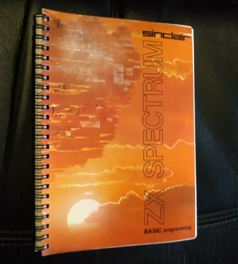
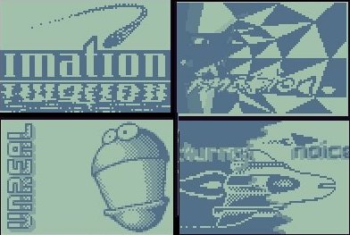

Introdução a Demoscene
Uma explicação muito resumida sobre esta arte!
Associação Inércia https://inercia.pt
É a cultura da criação de arte em tempo real pela história da computação caseira.
Demo |
Scene |
|
Abreviação de demonstração, que exibe o que os utilizadores conseguem fazer com o computador. |
É todo o aspecto social, as pessoas que criam esta arte, eventos internacionais e as histórias. |
Demonstrar o que? (Parte 1)
|
.kkrieger por .theprodukkt Windows 32-bit Geração processual de todos os elementos, animações, gráficos, efeitos sonoros e música. |
Demonstrar o que? (Parte 2)
|
Bouncing Ball por Commodore International 1984 Amiga 1000 Techdemo para demonstração das capacidades de multi-tasking do computador. |
Demonstrar o que? (Parte 3)
|
Lemmings por Anarchy e Skid Row 1991 Commodore Amiga Crack para o jogo Lemmings. |
Demonstrar o que? (Parte 4)
|
Programação em Basic Spectrum ZX |
 |
O que são demos
Proposito
Plataformas da Demoscene (8bit)
Consolas de jogos e computadores com recursos limitados:
| Ano | Freq | RAM | Res | Cores/Tons | |
| ZX Spectrum | 1982 | 3.5MHz | 16KB | 256 x 162 | 15 |
| Commodore 64 | 1982 | 1MHz | 64KB | 320 x 200 | 16 |
| Gameboy | 1989 | 4MHz | 8KB | 160 x 144 | 4 |
| Amstrad CPC | 1989 | 4MHz | 8KB | 160 x 144 | 4 |
| Gejmbåj | aeon | Edge of Disgrace | Imation |
 |
 |
 | |
| 2010 | 2008 | 2008 | 2000 |
Plataformas da Demoscene (16bit)
Consolas de jogos e computadores com recursos menos limitados:
| Ano | Freq | RAM | Res | Cores/Tons | |
| Amiga 500 | 1985 | ||||
| Megadrive | 1991 | ||||
| Atari ST | 1991 | ||||
| MSDOS | 1991 |
Plataformas da Demoscene (32bit)
Consolas de jogos e computadores
| Ano | Freq | RAM | Res | Cores/Tons | |
| Windows | |||||
| PlayStation | |||||
| Gameboy Advanced | |||||
| Dreamcast |
Origem
Pirataria Informática
BBS
Ou bulletin board system, são os predecessor de foruns e redes sociais
Terminais remotos acessiveis por dial-up
Informação era transmitida por caracteres ASCII ou ANSI art para superar limites da ligação.
Com a melhoria das ligações tornou-se possivel partilhar ficheiros.
Demoparty
Eventos públicos que decorrem em vários paises anualmente
Participação internacional
Competições & Concertos ao vivo & Apresentações
Visualização de produções de anos anteriores
Muita diversão, histórias da industria, show-off de projectos pessoais e novos amigos!